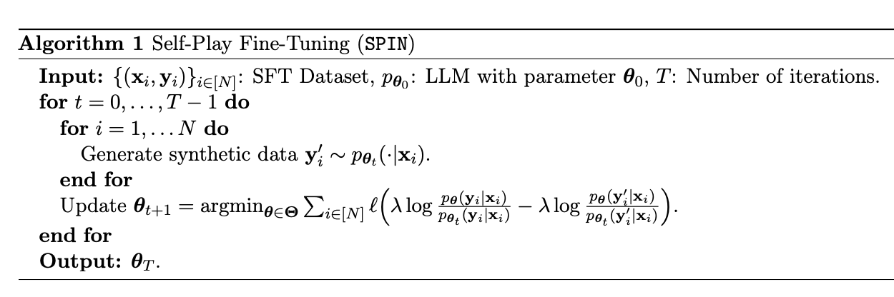

2024 ML Reading
Table of Contents
- 2024 Reading in Machine Learning
- Rules and Similarity in Concept Learning
- Generalization, Similarity, and Bayesian inference
- Self-Play Fine-Tuning Converts Weak Language Models to Strong Language Models
- A Vision Check-up for Language Models
- aMUSEd: An Open MUSE Reproduction
- Image Sculpting: Precise Object Editing with 3D Geometry Control
- Instruct-Imagen: Image Generation with Multi-modal Instruction
- ODIN: A Single Model for 2D and 3D Perception
2024 Reading in Machine Learning
Rules and Similarity in Concept Learning
link, Josh Tenenbaum
This paper is from neurips 1999, so it's an old one. There are two specific modes of generalizing concepts: abstracting rules you've inferred and computing similarity to other examples you've seen before.
This paper introduces the number concept game which is similar to my WILT test except using single numbers instead of tuples of three (and using humans instead of LLMs. In the number concept game there are three classes of trials
- you get one example of the concept (i.e. one True value)
- you get four examples that all adhere to a simple rule (which might not be the right one)
- you get four values which don't adhere to a simple rule (which might not be the right one)
and participants had to judge probability that a new example would return true or false. For 1, pariticipants rated numbers "similar to" the number higher. For 2, people tended to assume the simple rule was right and guessed close to 0 or 1. For 3, people tended to just guess higher probability if the magnitudes were similar.
Tenenbaum fits a bayesian model over people's replies relative to a large generated hypothesis space, and show that this is a unifying framing between these distinct "abstracting rules" and "computing similarity" modes (i.e. that they both emerge from the same process here).
Generalization, Similarity, and Bayesian inference
link, tenenbaum and griffiths
Somewhat more detail compared to the above paper, but similar in concept. Identifies Shepard 1987's hormone/worm test as a prior example of test number 1 in the rules and similarity paper, and identifies his theories about this test as an example of computing similarity to exemplars. It also identifies Tversky's set-theoretic models as abstracting rules, and frames bayesian modeling as a unifier between these two methods, as well as one which can handle arbitrary stimulus structures (i.e. the Shepard test suggests an interval by design, the number concept game has a case where a rule is suggested implicitly by the test examples).
The size principle states that smaller hypotheses should be preferred when equally consistent with data. It emerges from strong sampling and explains how learners make meaningful generalizations from few examples. The principle is key in transitioning from similarity-like to rule-like generalization.
Strong sampling assumes examples are drawn from the concept's extension, favoring smaller hypotheses. Weak sampling assumes examples are generated independently, only considering consistency with hypotheses. This choice significantly impacts inferences from observations.
Self-Play Fine-Tuning Converts Weak Language Models to Strong Language Models
link, Quanquan Gu and other UCLA staff
Self-Play Fine-Tuning (SPIN, lol) is like a GAN framing for LLMs; it tries to discern it's outputs from human generated examples. Self-play, I think, has been a hot topic for LLMs since RLHF became the dominant paradigm for making them, so I'm excited to see some work on it. Fundamental question: Can we empower a weak LLM to improve itself without acquiring additional human annotated data?
Players: new LLM, old LLM. Old LLM generates responses close to real data, new LLM tries to discern them. Goal is to converge to them being the same. These are the same LLM at different iterations. Doesn't require human feedback nor a stronger LLM.

Experiments and results: zephyr7b (ft of mistral7b on ultrachat200k) -> open LLM leaderboard. 58 -> 63 after 3 iterations. Standard ablations, etc. Surpasses vicuna-12b on MT-Bench.
Some thoughts: I'm not a huge believer in synthetic data, and I think the limited degree to which synthetic data has worked for LLMs where it's largely flopped for vision problems is because of a sort of disembodied version of self-play, which does work. Critical here, imo, is that it is more evidence LLMs have some sort of internal world model; an environment that they can explore to improve their policy. Stuff like alpaca is more akin to policy distillation in my view, moreso than it has a real analogy to supervised training with synthetic data.
In this vein, they acknowledge that this is a mechanism for making pmodel and pdata form the same distribution. They mention how this puts an inherent ceiling on this (human performance). So maybe it's like this: pretraining builds the world model, this type of stuff builds the policy. You can distill the performance of a strong agent (or people) by copying its policy through self-play training.
A Vision Check-up for Language Models
link, MIT CSAIL (Pratyusha Sharma et al)
Although LLM-generated images do not look like natural images, results on image generation and the ability of models to correct these generated images indicate that precise modeling of strings can teach language models about numerous aspects of the visual world. A vibe adjacent to the Imagen paper, which is one of my favorites ever.
Core here is outputs of text -> image-rendering code -> image, and likewise inputs to the model as image -> image-rendering code. Part II is funny, where they train a resnet on the output of these images and then evaluate them on real images (lmao).
GPT-3.5 is slightly above chance at recognizing human images for scenes, everything else is pretty much at chance for both scenes and objects. Models can fail to recognize objects that they can draw themselves fairly well. I really do not like their imagenet experiments, but I guess it's fine for demonstrating that they are drawing reasonable objects (compared to, like, asking a human to label 1M generations and comparing them to the prompts they were asked to draw).
Some thoughts: funny! I think most of what happened in this paper was kind of goofy, and I think these capabilities are likely downstream of text examples of explaining how to draw things with these programs (something I think surely exists in the training set of GPT-4, even if not a huge number of examples). It's something I think points to how the code pretraining of GPT helps language generation so much – it learns how to represent stuff like "left", "right", "in front of" etc from code, which will help it understand these concepts in downstream language tasks. Language encodes a surprising amount of visual information (see: mnemonics).
aMUSEd: An Open MUSE Reproduction
link huggingface + stability
They managed to reproduce MUSE, which is a masked image model (MIM) image generation method which doesn't use diffusion + has fewer inference steps / is "more interpretable". Fine-tuning for muse is easier than for diffusion since it only uses 1 image. Image generation quality seems not that great, but it's a good non-diffusion image generation model so I'm happy to see it.
MUSE originally used a 4.6b text encoder, a 3b base transformer, and a 1b super-resolution transformer. In contrast, this uses 800m parameters total, which is why the output is so much worse. In exchange, normal people can actually run it, so it will potentially help open source. Not much to it otherwise – it's a technical report.
Image Sculpting: Precise Object Editing with 3D Geometry Control
link nyu and intel, Yenphraphai et al
- Single view 3D reconstruction (Zero-1-to-3)
- manipulation of objects in 3D (Space Deformation / ARAP / linear-based skinning)
- coarse-to-fine generative enhancement (feature injection, controlnet + dreambooth)
The results look nice. I did not think single view 3D reconstruction was mature enough to actually get this sort of result yet, but given that the remainder of this paper follows pretty intuitively from depth-controlled controlnet and other similar types of conditioned generation. I think I will need to do some playing around with these single view reconstruction methods: even if these are cherry-picked examples, I wouldn't have imagined they would have turned out as nicely as they seem to have here.
Instruct-Imagen: Image Generation with Multi-modal Instruction
I will admit I am wary of these google papers given that there's never code + they got caught sprucing up their gemini results, but let's give it a fair read.
A fine-tuned diffusion model which natively accepts multimodal input similar to T2I-adapter. Benefits of this are that you can refer to particular images in the prompt, rather than just training it to vaguely do something with specific adapter modules. Some work in here on retrieval-augmented training and multi-modal instruction-tuning in the fine-tune process from a normal (image, text) model. The ultimate goal here is a diffusion model which will generalize to different types of / compositions of instructions, rather than having strict modules which just do a specific thing (e.g. controlnet)
This seems overall pretty similar to other methods for conditional generation; additional cross attention in the diffusion step of a T2I model, which takes in encoded external images as context. I do like the retrieval-augmented training, which I will be referring to as RAT from now on. I do wonder if the retrieval component can be learned as well, if it's being done in training rather than just in inference. As it stands, they just do 10-NN from frozen CLIP embeddings, with duplication removal, truncated to 5.
Their results are fine – it is not possible to evaluate image generation models from cherrypicked examples in papers, so we will not know how this really performs relative to T2I-adapter and such for quite some time. But what really caught my attention was the following table
The claim here is "Retrieval-augmented training helps generalization", which is a little tenuous, but it's hard to deny the improvement for in-domain eval. I suspect there's still more advantage left on the table here, and that retrieval-augmented training (in a way, a form of active learning) will prove an interesting topic of discussion beyond just enabling multi-modal input.
ODIN: A Single Model for 2D and 3D Perception
Existing models for 3d perception usually use 3D point clouds, and these models are typically trained completely with no 2D data at any point. There was an implicit belief that 2D and 3D data required different architectures, but this paper trains on both of these at once and does well. In particular, this model does better when the point clouds are taken from actual measurements, rather than sampled from an a priori known 3D mesh.
The way this works is: Taking RGB-D images, alternating between 2D and 3D stages in the architecture, fusing information from 2D images into a 3D representation, then projecting back those tokens to 2D locations, etc.
Their ablations are structured really nicely in this paper, really simplifies reading it: joint 2d-3d training helps 3d perception, cross-view fusion is crucial for instance segmentation but not for semantic segmentation, 2d pretrained weight init helps, stronger 2d backbones help, finetuning everything helps, supplying 2d features directly to 3d models via concatenation does not help.
Yet another entry in the "can we get 3D from 2D" undercurrent that I saw everywhere at ICCV this year. Because 2D data is so much more plentiful than 3D data, even methods that are clearly formulated worse than a pure 3D dataset can have higher value just from generally much higher capability.